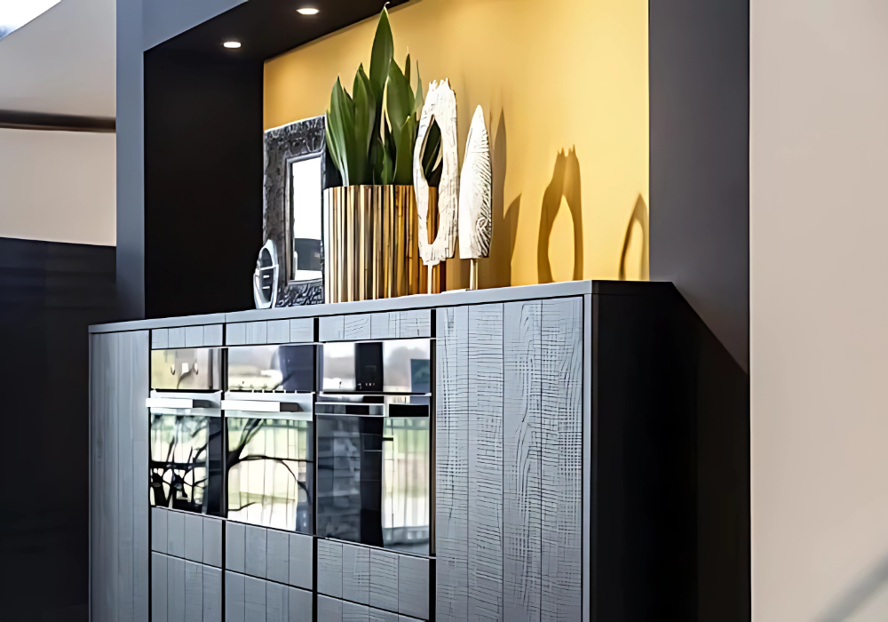
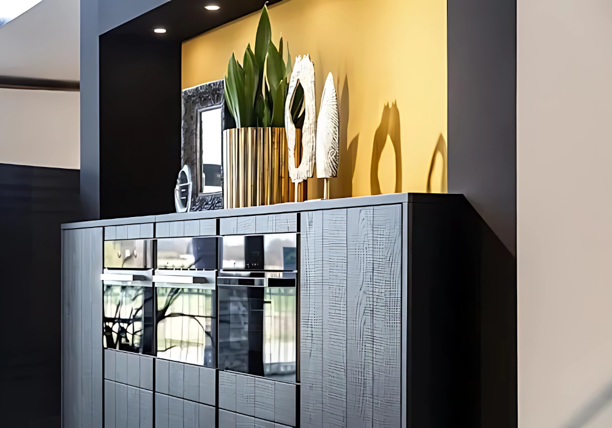
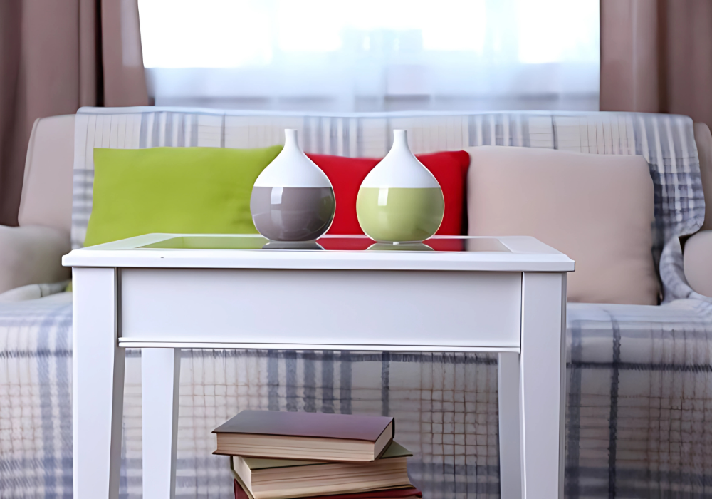
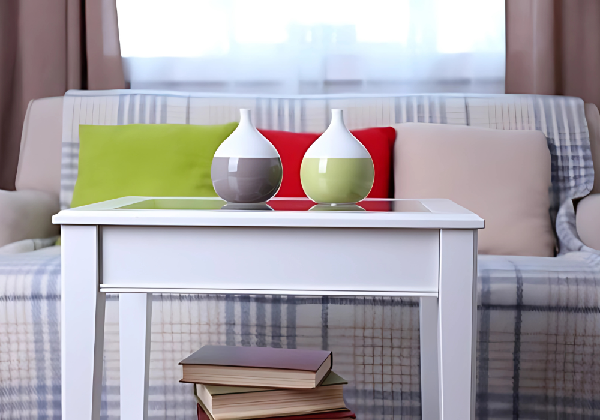

Your Content Heading
This is your content that goes beside the image. You can add more text or details here.

This is your content that goes beside the image. You can add more text or details here.

 


This is your content that goes beside the carousel. You can add more text or details here.

 
